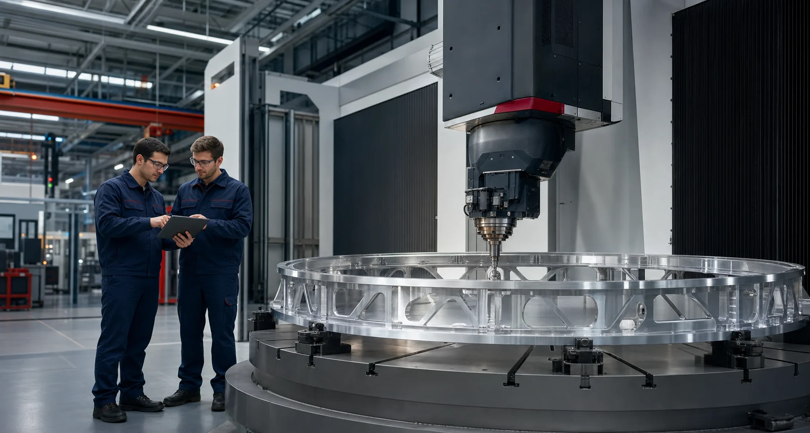

← На главную
Работа,
Карьера на предприятии
Работа,
которая имеет значение
Инженерные и рабочие специальности для людей, которые ценят точность, ответственность и реальный результат своего труда.
перечне предприятия
рабочих специальностей
отдел кадров, каб. 14А
01
Условия
Стабильность и развитие
Вместе создаём
сложную технику
На официальной странице прямо указаны высокий уровень заработной платы и полный социальный пакет. Подробные условия по каждой позиции уточняются в отделе кадров.
₽
Достойная оплата
Высокий уровень заработной платы — формулировка официального раздела вакансий.
+
Социальный пакет
Полный социальный пакет для сотрудников предприятия.
◎
Технологичная среда
Работа в авиационном и ракетно-космическом производственном контуре.
↗
Профессиональный рост
Инженерные категории и рабочие разряды отражены в опубликованном перечне.
02
Открытые позиции
Найдите своё направление
Вакансии
Перечень перенесён с официальной страницы предприятия. Актуальность и детали необходимо уточнять у отдела кадров.
Инженер-технолог
Требования и конкретный участок работы уточняются при обращении.
Уточнить по вакансии ↗Инженер по испытаниям
Требования и конкретный участок работы уточняются при обращении.
Уточнить по вакансии ↗Мастер
Условия, требования и производственный участок уточняются в отделе кадров.
Уточнить по вакансии ↗Токарь
Квалификационные требования уточняются при обращении.
Уточнить по вакансии ↗Токарь-расточник
Квалификационные требования уточняются при обращении.
Уточнить по вакансии ↗Токарь-карусельщик
Квалификационные требования уточняются при обращении.
Уточнить по вакансии ↗Токарь-револьверщик
Квалификационные требования уточняются при обращении.
Уточнить по вакансии ↗Фрезеровщик
Квалификационные требования уточняются при обращении.
Уточнить по вакансии ↗Шлифовщик
Квалификационные требования уточняются при обращении.
Уточнить по вакансии ↗Оператор станков с ПУ
Квалификационные требования уточняются при обращении.
Уточнить по вакансии ↗Слесарь механосборочных работ
Квалификационные требования уточняются при обращении.
Уточнить по вакансии ↗Слесарь-сборщик летательных аппаратов
Квалификационные требования уточняются при обращении.
Уточнить по вакансии ↗Сборщик-клепальщик
Квалификационные требования уточняются при обращении.
Уточнить по вакансии ↗Слесарь-испытатель
Квалификационные требования уточняются при обращении.
Уточнить по вакансии ↗Монтажник электрооборудования летательных аппаратов
Квалификационные требования уточняются при обращении.
Уточнить по вакансии ↗Маляр (по металлу)
Квалификационные требования уточняются при обращении.
Уточнить по вакансии ↗Изолировщик
Квалификационные требования уточняются при обращении.
Уточнить по вакансии ↗Электросварщик ручной сварки
Квалификационные требования уточняются при обращении.
Уточнить по вакансии ↗По вашему запросу вакансий не найдено.
 ПО «ПОЛЁТ»
ПО «ПОЛЁТ»Отдел кадров
Готовы сделать
следующий шаг?
Позвоните специалистам отдела кадров и уточните актуальность позиции, требования, график и условия трудоустройства.
Приём кандидатовг. Омск, ул. Б. Хмельницкого, 287
отдел кадров, кабинет 14АПоказать на карте ↗Перед визитом рекомендуем уточнить время приёма по телефону.
отдел кадров, кабинет 14АПоказать на карте ↗Перед визитом рекомендуем уточнить время приёма по телефону.